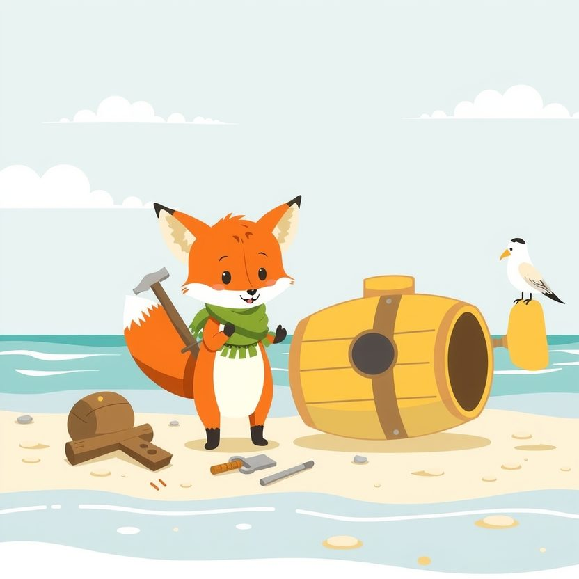

Titistoire › Les Étoiles (3-6 ans)
Filou et le sous-marin presque fini
Une histoire de Filou le renard pour parler de : prendre le temps de bien faire.

▶ Écouter et regarder l'histoire
Gratuit, sans inscription : la voix lit, le texte suit mot à mot, les images tournent comme dans un album.
Le texte de l'histoire
Filou a décidé d'explorer le fond de l'océan. Et pour cela, il se fabrique un sous-marin sur la plage. Tout seul, en une matinée. « Facile ! »
Un tonneau pour la coque. Une casserole pour le hublot. Trois clous de travers par-ci, un bout de ficelle par-là. Pan, pan, pan ! Et que ça saute !
« Tu n'as pas mis de colle autour du hublot », fait remarquer une mouette. « Pas le temps ! réplique Filou en haussant les épaules. Ça ira bien comme ça. »
Et plouf ! Le sous-marin s'enfonce doucement. Des poissons jaunes, des coraux roses, des algues qui dansent… « Regardez-moi ça ! claironne Filou. Le plus grand explorateur de tous les temps ! »
Ploc. Une goutte s'écrase sur son museau. Filou l'essuie d'un revers de patte. Ploc. Une autre. « Ce n'est rien. Ça ira bien comme ça. »
Ploc, ploc, ploc. Le voilà qui patauge, de l'eau jusqu'aux chevilles. Et les poissons le regardent d'un drôle d'air, de l'autre côté de la casserole.
Pschhhit ! Le hublot se décolle. L'eau jaillit à gros bouillons. « Au secours ! » Filou bouche un trou avec sa patte, un autre avec sa queue, un troisième… Mais il n'a pas assez de pattes !
Heureusement, quelqu'un en a huit. Hop, hop, hop ! Huit bras orange s'enroulent autour du tonneau et bouchent les huit fuites d'un seul coup.
C'est Octave, le poulpe à lunettes, l'horloger du récif. « Bien le bonjour, salue-t-il fort poliment. Votre bateau fuit. Je crois qu'il n'était pas tout à fait fini. »
Octave remorque le sous-marin jusqu'à son atelier, au creux d'une grotte de corail. Là, chaque chose a sa place : les vis par taille, les coquillages par couleur, et huit petits tournevis, un pour chaque bras.
« Nous allons le réparer ensemble, propose Octave. D'abord, on ponce. » « C'est long ? » « Oui. » « Et après ? » « On colle. Et on attend que ça sèche. » « Attendre ?! » s'étrangle Filou.
Filou soupire si fort qu'il en sort un chapelet de bulles. Mais il prend tout de même le papier à poncer. Frrt, frrt, frrt.
Au bout de cinq minutes, Filou n'y tient plus. Pendant qu'Octave a le dos tourné, il plaque une planche à toute vitesse, ni vu ni connu. « Voilà ! Fini ! »
La planche tient une seconde. Deux secondes. Et flop ! elle dégringole sur sa patte. « Aïe ! » Filou sautille sur un pied.
Octave ne se moque pas. Il ramasse la planche, tranquillement. « Moi aussi, quand j'étais petit poulpe, je voulais avoir fini avant d'avoir commencé. Regarde. »
Il ouvre délicatement un coquillage. Dedans, une horloge minuscule fait tic-tac, avec des rouages dorés, fins comme des cils de crevette. « Celle-là, je l'ai recommencée onze fois. »
Filou colle son œil tout près. C'est la plus belle chose qu'il ait jamais vue. « Onze fois… souffle-t-il. Et tu ne t'es pas énervé ? » « Oh si. Sept fois sur onze. »
Longtemps, Filou contemple son sous-marin tout cabossé. Puis il reprend le papier à poncer. Frrt… frrt… Plus lentement, cette fois. Et il tire un petit bout de langue, pour mieux s'appliquer.
On ponce. On colle. Et on attend que ça sèche, en jouant aux dominos avec des coquillages. Filou perd à chaque partie, mais c'est parce qu'Octave voit huit coups à l'avance.
Viennent ensuite les vis, qu'il faut serrer une par une. Filou les aligne et les compte : quarante-deux. Il ne savait même pas qu'il pouvait compter jusque-là.
Et quand la dernière vis est serrée, le sous-marin reluit comme un sou neuf. Il est rond, lisse, solide. On dirait un vrai. C'est un vrai.
Cette fois, ils plongent à deux, plus profond que Filou ne l'a jamais rêvé. Là où la mer est bleu nuit, là où les poissons portent des lanternes.
Filou guette le ploc, l'oreille tendue. Rien. Pas une goutte. Seulement, très loin, le chant d'une baleine.
« Alors ? demande Octave, l'œil malicieux. Ça ira bien comme ça ? » Filou sourit, le museau écrasé contre le hublot. « Non. C'est beaucoup mieux que ça. »